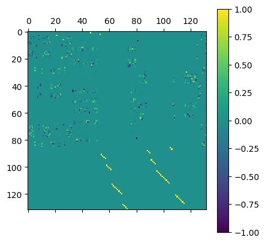
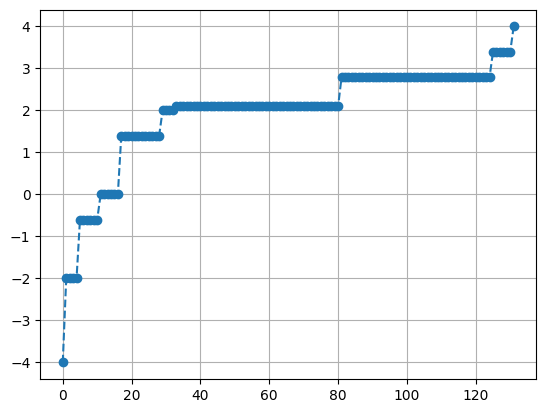
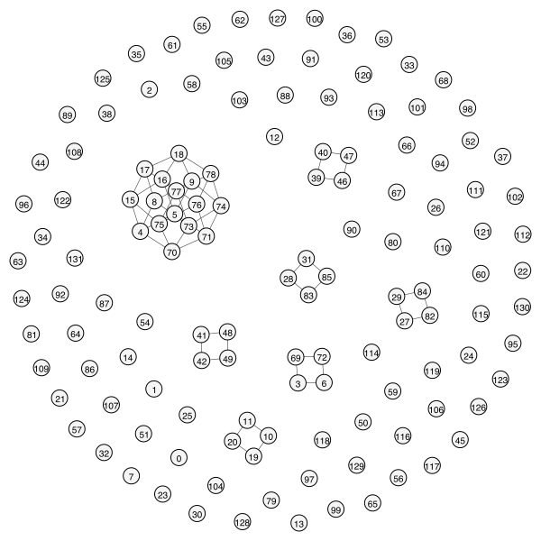
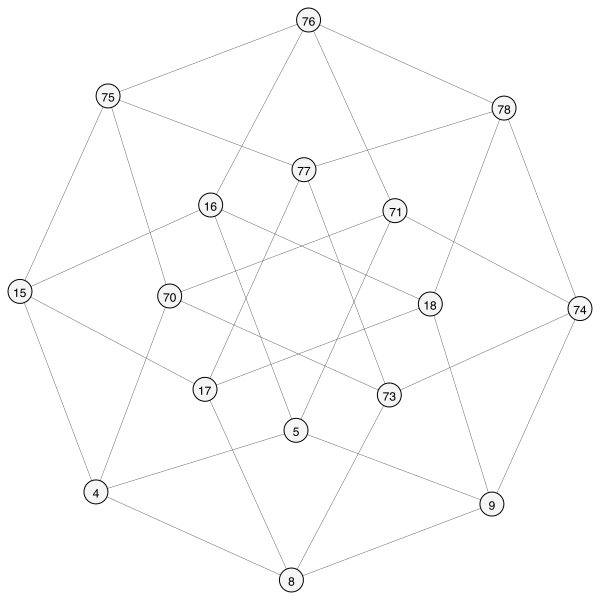

[1]:
import igraph
import matplotlib.colors as mcolors
import matplotlib.pyplot as plt
import networkx as nx
import numpy as np
import pandas as pd
import pynauty
import scipy.sparse as sp
from itertools import product
from scipy.sparse.linalg import expm_multiply
from sympy.combinatorics import Permutation, PermutationGroup
from qlinks.symmetry.gauss_law import GaussLaw
from qlinks.lattice.component import Site
from qlinks.lattice.square_lattice import SquareLattice, Plaquette
from qlinks.symmetry.automorphism import Automorphism
from utils import setup_igraph, setup_model
np.set_printoptions(threshold=np.inf)
pd.set_option("display.max_rows", None)
[29]:
def ham0(coup_rk):
_lattice = SquareLattice(4, 4)
_gauss_law = GaussLaw.from_staggered_charge_distri(4, 4, flux_sector=(0, 0))
_basis = _gauss_law.solve()
_kinetic_term = sp.csr_array((_basis.n_states, _basis.n_states), dtype=float)
_potential_term = sp.csr_array((_basis.n_states, _basis.n_states), dtype=float)
_hamiltonian = sp.csr_array((_basis.n_states, _basis.n_states), dtype=float)
# for i, corner_site in enumerate([(0, 1), (0, 3), (2, 0), (2, 2)]):
# plaquette = Plaquette(_lattice, Site(*corner_site))
# flipper, flip_counter = plaquette[_basis], (plaquette**2)[_basis]
# _kinetic_term += flipper
# _potential_term += flip_counter
# _hamiltonian += (
# -1 * flipper + coup_rk * (flip_counter - 4 * sp.identity(_basis.n_states)) # type: ignore[index]
# )
plaquette_ops = {}
plaquette_sq_ops = {}
for corner_site in [(0, 1), (0, 3), (2, 0), (2, 2)]:
plaquette = Plaquette(_lattice, Site(*corner_site))
plaquette_ops[corner_site] = plaquette[_basis] # P_(x,y)
plaquette_sq_ops[corner_site] = (plaquette**2)[_basis] # P_(x,y)^2
# potential term stays the same: sum of P^2
_potential_term = sum(plaquette_sq_ops.values())
# kinetic term becomes:
# P^2_(0,1) @ P_(0,3) + P_(0,1) @ P^2_(0,3)
# + P^2_(2,0) @ P_(2,2) + P_(2,0) @ P^2_(2,2)
_kinetic_term = (
plaquette_sq_ops[(0, 1)] @ plaquette_ops[(0, 3)]
+ plaquette_ops[(0, 1)] @ plaquette_sq_ops[(0, 3)]
+ plaquette_sq_ops[(2, 0)] @ plaquette_ops[(2, 2)]
+ plaquette_ops[(2, 0)] @ plaquette_sq_ops[(2, 2)]
)
_hamiltonian = (
-1 * _kinetic_term
+ coup_rk * (_potential_term - 4 * sp.identity(_basis.n_states))
)
return _basis, _hamiltonian, _kinetic_term, _potential_term
[38]:
coup_rk = -0.7
basis, hamiltonian, kinetic_term, potential_term = ham0(coup_rk)
evals, evecs = np.linalg.eigh(hamiltonian.toarray())
plt.matshow(evecs)
plt.colorbar()
2026-03-31 14:23:22 [constraint_programming.py] INFO: CpSolverResponse summary:
status: OPTIMAL
objective: 0
best_bound: 0
integers: 32
booleans: 32
conflicts: 53
branches: 2052
propagations: 9779
integer_propagations: 11237
restarts: 672
lp_iterations: 746
walltime: 0.021322
usertime: 0.021322
deterministic_time: 0.00518449
gap_integral: 0
solution_fingerprint: 0x932947a4f9f63e5f
2026-03-31 14:23:22 [constraint_programming.py] INFO: Found 132 optimal solutions.
[38]:
<matplotlib.colorbar.Colorbar at 0x1221a1b50>

[39]:
plt.plot(evals, linestyle="--", marker="o")
plt.grid()

[32]:
aut = Automorphism(-kinetic_term)
aut.joint_partition.keys()
g = nx.from_scipy_sparse_array(-kinetic_term)
ig = igraph.Graph.from_networkx(g)
ntg = pynauty.Graph(
ig.vcount(),
directed=False,
adjacency_dict=nx.to_dict_of_lists(g),
)
aut_gp = pynauty.autgrp(ntg)[0]
# perm_gp = PermutationGroup([Permutation(p) for p in aut_gp])
---------------------------------------------------------------------------
AmbiguousSolution Traceback (most recent call last)
Cell In[32], line 1
----> 1 aut = Automorphism(-kinetic_term)
2 aut.joint_partition.keys()
4 g = nx.from_scipy_sparse_array(-kinetic_term)
File <string>:4, in __init__(self, adj_mat)
File ~/projects/qlinks/qlinks/symmetry/automorphism.py:43, in Automorphism.__post_init__(self)
38 def __post_init__(self):
39 self._graph = nx.from_numpy_array(self.adj_mat)
40 self._df = pd.DataFrame(
41 {
42 "degree": list(self.degree_series.values()),
---> 43 "bipartition": list(self.bipartition_series.values()),
44 }
45 )
File ~/projects/qlinks/qlinks/symmetry/automorphism.py:84, in Automorphism.bipartition_series(self)
82 @property
83 def bipartition_series(self) -> Dict:
---> 84 top_nodes, bottom_nodes = nx.bipartite.sets(self._graph)
85 bipartition_dict = {node: "A" for node in top_nodes}
86 bipartition_dict.update({node: "B" for node in bottom_nodes})
File <class 'networkx.utils.decorators.argmap'> compilation 20:3, in argmap_sets_17(G, top_nodes, backend, **backend_kwargs)
1 import bz2
2 import collections
----> 3 import gzip
4 import inspect
5 import itertools
File ~/projects/qlinks/.venv/lib/python3.11/site-packages/networkx/utils/backends.py:551, in _dispatchable._call_if_no_backends_installed(self, backend, *args, **kwargs)
545 if "networkx" not in self.backends:
546 raise NotImplementedError(
547 f"'{self.name}' is not implemented by 'networkx' backend. "
548 "This function is included in NetworkX as an API to dispatch to "
549 "other backends."
550 )
--> 551 return self.orig_func(*args, **kwargs)
File ~/projects/qlinks/.venv/lib/python3.11/site-packages/networkx/algorithms/bipartite/basic.py:218, in sets(G, top_nodes)
216 if not is_connected(G):
217 msg = "Disconnected graph: Ambiguous solution for bipartite sets."
--> 218 raise nx.AmbiguousSolution(msg)
219 c = color(G)
220 X = {n for n, is_top in c.items() if is_top}
AmbiguousSolution: Disconnected graph: Ambiguous solution for bipartite sets.
[35]:
g = nx.from_scipy_sparse_array(-kinetic_term)
# highlight = list(aut.degree_partition.values())
# highlight = perm_gp.orbits()
# highlight = list(nx.bipartite.sets(g))
highlight = []
# highlight_color = list(mcolors.TABLEAU_COLORS.values())
# highlight_color = list(mcolors.CSS4_COLORS.values())
# cmap = plt.get_cmap('Set3')
# highlight_color = [mcolors.to_hex(cmap(i)) for i in range(cmap.N)]
# cmap = plt.get_cmap('Set2')
# highlight_color += [mcolors.to_hex(cmap(i)) for i in range(cmap.N)]
# highlight_color *= 2000
highlight_color = [
# "dimgray",
# "whitesmoke",
# "deepskyblue",
# "yellowgreen",
# "aqua",
# "pink",
# "tomato",
# "royalblue",
# "blueviolet",
# "cornflowerblue",
# "limegreen",
]
ig = setup_igraph(g, highlight, highlight_color)
# degree = np.array(list(dict(g.degree).values()))
# (bipartite, types) = ig.is_bipartite(return_types=True)
# nodes = [int(n) for n in list(sub_sub_ig.vs["label"])]
# outer_boundary = list(nx.node_boundary(g, nodes))
# sub_ig = ig.induced_subgraph(np.append(nodes, outer_boundary))
# sub_ig = ig.induced_subgraph(np.where(degree == 12)[0])
# sub_ig = ig.induced_subgraph(aut.type_1_scars((8, 'B'))[0].node_idx)
# fig, ax = plt.subplots(figsize=(6, 6), facecolor="white")
igraph.plot(
ig,
# layout=ig.layout_kamada_kawai(),
# layout=ig.layout_reingold_tilford(root=[0, 25, 50, 75]),
# layout=ig.layout_bipartite(types=types),
vertex_size=18,
vertex_label_size=10,
# vertex_label_dist=1.5,
edge_width=0.6,
# edge_color="darkgray",
)
[35]:

[36]:
sub_components = ig.connected_components(mode="weak")
for i, c in enumerate(sub_components):
mat = nx.to_numpy_array(ig.subgraph(c).to_networkx())
if mat.shape[0] > 1:
print(i, mat.shape[0], mat.shape[0] - np.linalg.matrix_rank(mat))
3 4 2
4 16 6
6 4 2
16 4 2
17 4 2
26 4 2
27 4 2
[37]:
sub_ig = ig.subgraph(sub_components[4])
igraph.plot(
sub_ig,
layout=sub_ig.layout_kamada_kawai(),
vertex_size=24,
vertex_label_size=12,
edge_width=0.4,
# edge_color="darkgray",
# target="qlm_subgraph_4x4_d=8_by_orbits.svg"
)
[37]:

[ ]:
evals, evecs = np.linalg.eigh(nx.to_numpy_array(sub_ig.to_networkx()))
[ ]:
evals
[ ]:
plt.matshow(evecs)
plt.colorbar()
[2]:
# import numpy as np
# import scipy.sparse as sp
from qlinks.lindbladian import *
# Example: two-level amplitude damping
d = 2
# Hamiltonian
H = sp.csc_matrix(np.array([[0.0, 0.0], [0.0, 1.0]], dtype=np.complex128))
gamma = 0.3
# Jump operator: sqrt(gamma) |0><1|
J = sp.csc_matrix(np.sqrt(gamma) * np.array([[0.0, 1.0], [0.0, 0.0]], dtype=np.complex128))
jumps = [J]
# Initial excited state density matrix
rho0 = np.array([[0.0, 0.0], [0.0, 1.0]], dtype=np.complex128)
times = np.linspace(0.0, 60.0, 201)
# Build Liouvillian
Lio = build_liouvillian(H, jumps, fmt="csc")
# Krylov evolution
rhos_krylov = evolve_liouvillian_krylov(rho0, Lio, times)
# RK4 in Liouville space
rhos_rk4 = evolve_liouvillian_rk4(
rho0, Lio, times, renormalize_trace=False, enforce_hermiticity=False
)
# Example observable: population of |1>
proj1 = np.array([[0.0, 0.0], [0.0, 1.0]], dtype=np.complex128)
pop1_krylov = [float(np.real(np.trace(rho @ proj1))) for rho in rhos_krylov]
pop1_rk4 = [float(np.real(np.trace(rho @ proj1))) for rho in rhos_rk4]
print("Final trace (Krylov):", trace_of_rho(rhos_krylov[-1]))
print("Final trace (RK4): ", trace_of_rho(rhos_rk4[-1]))
print("Final pop |1> Krylov:", pop1_krylov[-1])
print("Final pop |1> RK4: ", pop1_rk4[-1])
print("Final fidelity to ground truth (Krylov): ", fidelity_pure(np.array([[1], [0]]), rhos_krylov[-1]))
print("Final fidelity to ground truth (RK4): ", fidelity_pure(np.array([[1], [0]]), rhos_rk4[-1]))
Final trace (Krylov): (0.9999999999999996+0j)
Final trace (RK4): (0.9999999999999993+0j)
Final pop |1> Krylov: 1.5229979744712722e-08
Final pop |1> RK4: 1.523014131806121e-08
Final fidelity to ground truth (Krylov): 0.9999999847700198
Final fidelity to ground truth (RK4): 0.999999984769858
[15]:
def prepare_ticqmbs_state(n: int, one_based: bool = False):
"""
Prepare the sparse state vector
|psi_tICQMBS> = 1/2 (|5> - |15> - |74> + |77>)
and its density matrix rho = |psi><psi|.
Parameters
----------
n : int
Total Hilbert-space dimension.
one_based : bool, optional
If True, interpret |5>, |15>, |74>, |77> as physics-style basis labels
and convert them to Python's 0-based indices.
If False, use them directly as 0-based indices.
Returns
-------
psi : scipy.sparse.csr_matrix
Sparse column vector of shape (n, 1).
rho : scipy.sparse.csr_matrix
Sparse density matrix of shape (n, n).
"""
labels = np.array([5, 15, 74, 77], dtype=int)
coeffs = np.array([1, -1, -1, 1], dtype=np.complex128) / 2.0
indices = labels - 1 if one_based else labels
if np.any(indices < 0) or np.any(indices >= n):
raise ValueError(f"State labels {labels.tolist()} do not fit in Hilbert space dimension n={n}.")
# Sparse column vector |psi>
psi = sp.csr_matrix(
(coeffs, (indices, np.zeros(len(indices), dtype=int))),
shape=(n, 1),
dtype=np.complex128,
)
# Sparse density matrix rho = |psi><psi|
rho = psi @ psi.getH()
return psi, rho
def random_mixed_density(n, density=0.25, rng=None):
if rng is None:
rng = np.random.default_rng()
A = sp.random(n, n, density=density, rng=rng,
dtype=np.complex128, format="csr")
rho = A @ A.getH()
rho = rho / rho.diagonal().sum()
return rho
coup_j, coup_rk, gamma = (1, -0.7, 4)
basis, model = setup_model(
"qdm", lattice_shape=(4, 4), coup_j=coup_j, coup_rk=coup_rk
)
jumps = []
for site_pair in [[(0, 1), (0, 3), (2, 0), (2, 2)]]:
J = sp.csr_array((basis.n_states, basis.n_states), dtype=np.complex128)
for i, corner_site in enumerate(site_pair):
plaquette = Plaquette(model.lattice, Site(*corner_site))
flipper, flip_counter = plaquette[basis], (plaquette**2)[basis]
J += -flipper + coup_rk * (flip_counter - sp.identity(basis.n_states))
# J += coup_rk * (model.potential_term - 4 * sp.identity(basis.n_states))
jumps.append(np.sqrt(gamma) * J)
# for i, corner_site in enumerate(
# [(0, 0), (0, 2), (2, 1), (2, 3), (1, 0), (1, 1), (1, 2), (1, 3), (3, 0), (3, 1), (3, 2), (3, 3)]
# ):
# plaquette = Plaquette(model.lattice, Site(*corner_site))
# flipper, flip_counter = plaquette[basis], (plaquette**2)[basis]
# J = -flipper + coup_rk * flip_counter
# jumps.append(np.sqrt(gamma) * J)
_, rho0 = prepare_ticqmbs_state(basis.n_states)
rng = np.random.default_rng()
eta = 0.99
rho0 = eta * rho0+ (1 - eta) * random_mixed_density(basis.n_states, density=0.25)
times = np.linspace(0.0, 40.0, 201)
# Build Liouvillian
Lio = build_liouvillian(model.hamiltonian, jumps, fmt="csr")
# Krylov evolution
rhos_krylov = evolve_liouvillian_krylov(rho0.toarray(), Lio, times)
# RK4 in Liouville space
# rhos_rk4 = evolve_liouvillian_rk4(
# rho0.toarray(), Lio, times, renormalize_trace=False, enforce_hermiticity=False
# )
# rhos_rk4 = evolve_matrix_rk4(rho0, model.hamiltonian, jumps, times)
psi0, ground_truth_rho0 = prepare_ticqmbs_state(basis.n_states)
proj1 = sp.identity(basis.n_states) - ground_truth_rho0
pop1_krylov = [float(np.real(np.trace(rho @ proj1))) for rho in rhos_krylov]
# pop1_rk4 = [float(np.real(np.trace(rho @ proj1))) for rho in rhos_rk4]
# they should be nullifier
print("Jump_opt @ |ground_truth_QMBS>: ", [sp.linalg.norm(jump @ ground_truth_rho0) for jump in jumps])
print("|| Lio @ |final_rho> ||: ", np.linalg.norm(Lio @ vec(rhos_krylov[-1])))
print("Final trace (Krylov):", trace_of_rho(rhos_krylov[-1]))
# print("Final trace (RK4): ", trace_of_rho(rhos_rk4[-1]))
print("Final pop |v_j> Krylov: ", pop1_krylov[-1])
# print("Final pop |v_j> RK4: ", pop1_rk4[-1])
print("Final fidelity to ground truth (Krylov): ", fidelity_pure(psi0.reshape((-1, 1)), rhos_krylov[-1]))
2026-03-31 16:10:50 [constraint_programming.py] INFO: CpSolverResponse summary:
status: OPTIMAL
objective: 0
best_bound: 0
integers: 32
booleans: 32
conflicts: 53
branches: 2052
propagations: 9779
integer_propagations: 11237
restarts: 672
lp_iterations: 746
walltime: 0.02414
usertime: 0.02414
deterministic_time: 0.00518449
gap_integral: 0
solution_fingerprint: 0x932947a4f9f63e5f
2026-03-31 16:10:50 [constraint_programming.py] INFO: Found 132 optimal solutions.
Jump_opt @ |ground_truth_QMBS>: [np.float64(0.0)]
|| Lio @ |final_rho> ||: 5.074483369187065e-05
Final trace (Krylov): (0.9999999999999512-5.526187549786361e-21j)
Final pop |v_j> Krylov: 0.009925031415874443
Final fidelity to ground truth (Krylov): 0.9900749685840767
[9]:
def trace_preservation_residual(L, n):
I_vec = np.eye(n, dtype=np.complex128).reshape(-1, order="F")
v = I_vec.conj() @ L
return np.max(np.abs(v))
trace_preservation_residual(Lio, basis.n_states)
[9]:
np.float64(4.440892098500626e-16)
[10]:
rho0 = sp.random(
basis.n_states, basis.n_states, density=0.6, rng=rng, dtype=np.complex128, format="csr"
)
unvec(Lio @ vec(rho0.toarray()), basis.n_states).trace()
[10]:
np.complex128(5.329070518200751e-15+5.329070518200751e-15j)
[11]:
[np.linalg.norm(rho - rho.conj().T) for rho in rhos_krylov]
[11]:
[np.float64(0.0),
np.float64(1.8700662346129429e-16),
np.float64(9.464082451269759e-17),
np.float64(5.381527918017715e-17),
np.float64(3.517184105725127e-17),
np.float64(2.6003262220127886e-17),
np.float64(2.0709519358909957e-17),
np.float64(1.7159290592193052e-17),
np.float64(1.4932428056867877e-17),
np.float64(1.3703951083878569e-17),
np.float64(1.2677412881098804e-17),
np.float64(1.24042532656253e-17),
np.float64(1.2313937335914738e-17),
np.float64(1.2152216795321912e-17),
np.float64(1.1388249197138611e-17),
np.float64(1.0878406828898714e-17),
np.float64(1.0270661152149688e-17),
np.float64(1.0256176232423648e-17),
np.float64(9.152350407153171e-18),
np.float64(9.232184344983692e-18),
np.float64(9.079509696461292e-18),
np.float64(8.827026768544696e-18),
np.float64(8.139197869242419e-18),
np.float64(8.10878013016519e-18),
np.float64(8.182089542794748e-18),
np.float64(7.956279700195979e-18),
np.float64(7.465127208343118e-18),
np.float64(7.105757297185086e-18),
np.float64(6.7342565376569195e-18),
np.float64(7.041402127732305e-18),
np.float64(6.618515154338618e-18),
np.float64(7.211584429918776e-18),
np.float64(6.9027326236932526e-18),
np.float64(6.680330183648214e-18),
np.float64(6.779058164929556e-18),
np.float64(6.439642726899515e-18),
np.float64(6.296314018054128e-18),
np.float64(6.771502323061541e-18),
np.float64(7.1321769601354e-18),
np.float64(6.7176676649422254e-18),
np.float64(6.970495567647808e-18),
np.float64(6.696209013613951e-18),
np.float64(6.5208803779749915e-18),
np.float64(6.286291158325978e-18),
np.float64(6.705194881455592e-18),
np.float64(6.6618822329283e-18),
np.float64(6.754508962550138e-18),
np.float64(6.642868179659604e-18),
np.float64(6.761370326102275e-18),
np.float64(6.950912571432017e-18),
np.float64(6.6820862554159425e-18),
np.float64(6.763469742399543e-18),
np.float64(7.455087474036716e-18),
np.float64(7.12359788989981e-18),
np.float64(7.143431736766218e-18),
np.float64(6.865614429398233e-18),
np.float64(6.6463273624518054e-18),
np.float64(6.00806729532527e-18),
np.float64(6.694428661643734e-18),
np.float64(6.291173931929593e-18),
np.float64(6.2596459641187935e-18),
np.float64(6.221700665858754e-18),
np.float64(6.405358034971366e-18),
np.float64(6.2702022805420365e-18),
np.float64(6.538026100118608e-18),
np.float64(6.520606284227249e-18),
np.float64(6.703823793800273e-18),
np.float64(6.5731054826030915e-18),
np.float64(6.372680739792064e-18),
np.float64(6.6310376432068665e-18),
np.float64(6.75027238056373e-18),
np.float64(6.881966711548364e-18),
np.float64(7.41330515207684e-18),
np.float64(7.221835914231362e-18),
np.float64(6.890162725652348e-18),
np.float64(6.77261906295634e-18),
np.float64(6.602095571863522e-18),
np.float64(7.235265021833233e-18),
np.float64(7.185086134683764e-18),
np.float64(6.920756470484733e-18),
np.float64(6.4991983062869256e-18),
np.float64(6.8733284682607695e-18),
np.float64(7.004044909858304e-18),
np.float64(6.81029679395728e-18),
np.float64(7.282448936761175e-18),
np.float64(6.93758711556502e-18),
np.float64(6.960372316140897e-18),
np.float64(6.821131530069473e-18),
np.float64(6.299204907688933e-18),
np.float64(6.2736670261665485e-18),
np.float64(6.547527173048213e-18),
np.float64(6.113082912815575e-18),
np.float64(6.358652115321696e-18),
np.float64(6.6374798622937965e-18),
np.float64(6.651458291715928e-18),
np.float64(6.542187107002702e-18),
np.float64(6.8333684658709715e-18),
np.float64(6.639865383097778e-18),
np.float64(6.5705024106575244e-18),
np.float64(6.596534132743763e-18),
np.float64(6.2986725983571265e-18),
np.float64(6.7882694352574434e-18),
np.float64(7.019624841199603e-18),
np.float64(6.897095012469385e-18),
np.float64(7.026955035813464e-18),
np.float64(6.915816939894022e-18),
np.float64(7.459381142772572e-18),
np.float64(7.041702318637714e-18),
np.float64(6.9918624648647e-18),
np.float64(7.163776183838837e-18),
np.float64(7.148431390794482e-18),
np.float64(6.926435543809429e-18),
np.float64(6.862901342809202e-18),
np.float64(6.963072307101747e-18),
np.float64(6.707030118732473e-18),
np.float64(6.79511826796951e-18),
np.float64(6.520618316204441e-18),
np.float64(6.380824365195788e-18),
np.float64(6.1867422726005916e-18),
np.float64(6.58841103724439e-18),
np.float64(6.960654295242322e-18),
np.float64(6.39347796649968e-18),
np.float64(6.585619334940595e-18),
np.float64(6.7844033015740846e-18),
np.float64(6.965024673785117e-18),
np.float64(6.577748639472739e-18),
np.float64(6.964544485010539e-18),
np.float64(6.773982950062909e-18),
np.float64(6.7184059337744704e-18),
np.float64(6.445418084003313e-18),
np.float64(7.065350330070384e-18),
np.float64(6.976510685312606e-18),
np.float64(6.48213426991216e-18),
np.float64(6.3895463379838684e-18),
np.float64(6.228819819752663e-18),
np.float64(6.6386268032455326e-18),
np.float64(6.5993775114766365e-18),
np.float64(6.691536451580623e-18),
np.float64(6.837102290443253e-18),
np.float64(6.491388920837814e-18),
np.float64(6.8717238946606084e-18),
np.float64(6.571277720543568e-18),
np.float64(6.526006185211172e-18),
np.float64(6.7306534323179826e-18),
np.float64(6.809590507426122e-18),
np.float64(6.991228713084747e-18),
np.float64(7.148299678563248e-18),
np.float64(6.938185460219853e-18),
np.float64(6.512341214728988e-18),
np.float64(6.765333412967267e-18),
np.float64(6.568021831345071e-18),
np.float64(6.712988014773928e-18),
np.float64(6.56047047252257e-18),
np.float64(7.000649332733683e-18),
np.float64(7.025264020104695e-18),
np.float64(7.185687287406939e-18),
np.float64(7.073628042191981e-18),
np.float64(6.766933321913059e-18),
np.float64(6.557558284893718e-18),
np.float64(6.580294948197903e-18),
np.float64(6.171721401444183e-18),
np.float64(6.215848324946621e-18),
np.float64(6.4959391777046774e-18),
np.float64(6.649797975026788e-18),
np.float64(6.84421962228399e-18),
np.float64(6.754940283889151e-18),
np.float64(6.4553258251609345e-18),
np.float64(6.511356277780914e-18),
np.float64(6.302701953924319e-18),
np.float64(6.361965726553046e-18),
np.float64(6.6702406970262005e-18),
np.float64(6.267983548670999e-18),
np.float64(6.279251630577892e-18),
np.float64(6.289088371271013e-18),
np.float64(6.498940571496117e-18),
np.float64(6.1985045783605095e-18),
np.float64(6.654620266941832e-18),
np.float64(6.73081183622431e-18),
np.float64(6.754991157075769e-18),
np.float64(6.82126293743472e-18),
np.float64(6.342934056577646e-18),
np.float64(6.299917626233969e-18),
np.float64(6.203822113479744e-18),
np.float64(6.339712853689966e-18),
np.float64(6.570565663287732e-18),
np.float64(6.7455533902210635e-18),
np.float64(6.941194411536214e-18),
np.float64(6.51312460269547e-18),
np.float64(6.4995020518329106e-18),
np.float64(6.6770457517227e-18),
np.float64(6.237247522091118e-18),
np.float64(6.68127052797928e-18),
np.float64(6.68047934462245e-18),
np.float64(6.579385510644833e-18),
np.float64(6.401005073575591e-18),
np.float64(6.942461585579857e-18),
np.float64(6.790712718767564e-18),
np.float64(6.462272103902034e-18),
np.float64(6.5685348733389854e-18),
np.float64(6.096787679948461e-18),
np.float64(6.6010775955509525e-18)]
[ ]: